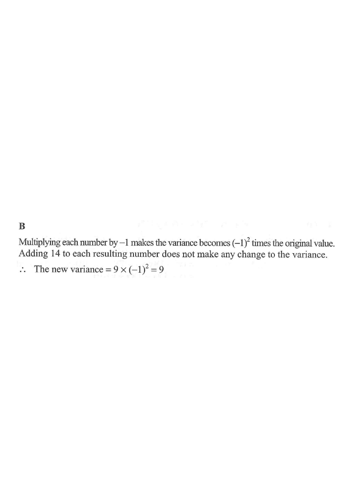

Step 1 — Given: the four numbers a, b, c, d have variance 9.
Question. If the variance of the four numbers $a$, $b$, $c$ and $d$ is $9$, then the variance of the four numbers $14-a$, $14-b$, $14-c$ and $14-d$ is

For data $x_1, x_2, \dots, x_n$ with mean $\bar{x}$, the variance is the average of the squared deviations:
$$\sigma^2=\frac{1}{n}\sum_{i=1}^{n}(x_i-\bar{x})^2$$
Given: $\sigma^2 = 9$ for $a,b,c,d$.
Hint: variance measures spread — it is built from how far each value sits from the mean.
The new numbers are obtained from the old ones by first multiplying by $-1$ and then adding $14$:
$$14-a = -a+14,\quad 14-b=-b+14,\quad 14-c=-c+14,\quad 14-d=-d+14$$
Hint: The transformation $x \mapsto 14-x$ is a reflection about $x=7$ followed by a shift — each part affects the variance differently.
If every value is multiplied by a constant $k$, the mean is also multiplied by $k$ and each deviation is multiplied by $k$:
$$(kx_i - k\bar{x})^2 = k^2 (x_i-\bar{x})^2$$
So the new variance becomes $k^2$ times the old one. Here $k=-1$, giving an extra factor of
$$(-1)^2 = 1\quad\text{(the variance is unchanged)}.$$
Hint: Squaring removes the sign, so flipping all data about the origin does not change the spread.
Adding the same constant $c$ to every value shifts both the values and the mean by $c$, so each deviation is unchanged:
$$(x_i + c) - (\bar{x}+c) = x_i - \bar{x}$$
Hence adding a constant causes no change to the variance.
Hint: Shifting all points right/left keeps the gaps between them identical.
Transformation: $x \mapsto -x + 14 = (-1)x + 14$.
Variance of new data $=$ (variance of old data) $\times (-1)^2$
$$\text{New variance} = 9 \times 1 = 9$$
Hint: Only the multiplier's square matters; the $+14$ drops out completely.